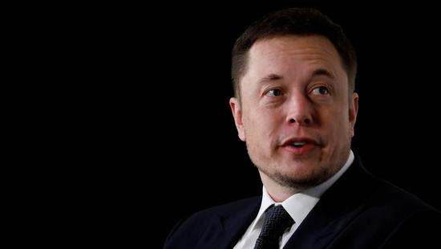

"链动全球"块链全球行峰会香港站圆桌讨论：区块链技术如何大规模应用？
区块链/技术
2018-07-15 15:37
Bianews

由Bianews和三言财经主办、Aurora极光链冠名赞助的“链动全球·2018区块链全球行峰会”第一站7月14日在香港举行，本次大会的主题为“探索.链接全球区块链”。 BTC media中国区负责人，Po.et中国区负责人周飘先生主持了区块链应用的圆桌讨论环节，以太坊华南和东南亚社区联首席经济顾问李智健先生，Aurora极光链创始人赵美军先生，香港区块链学会副会长、天使投资人Renu
Bhatia女士和Dapp.com联合创始人兼CEO Kyle Lu先生参与了此次的讨论。周飘先生就当前以及未来区块链技术在生活中的应用与嘉宾们进行了讨论。 金融行业都是中心化的机制，去中心化的机制会损害他们的利益。那区块链如何与金融业结合落地呢？对于这个问题，香港区块链学会的副会长Renu称，现在的能源数据大都掌握在少数人手中，现在已经到了不能再中心化的地步，我们要去中心化，这就是现实。我们需要有企业级的区块链，或者是公有的区块链，这样才能去中心化，符合区块链的愿景。关键问题是这些链如何共同合作？首先，要在监管之下大规模开展去中心化的工作，这样才能吸引更多人使用；其次，我们需要教育公众，让使用区块链的用户去帮助我们吸引其他用户到去中心化的模式中来。
以太坊华南和东南亚社区联首席经济顾问及发起人、区块链产业分析师协会创办人李智健认为，传统银行系统都要合规，资本就要资产抵押，最好的资产抵押就是传统的白银和黄金。如果用区块链的话，就是重构了金融的信用。分布式管理不是最有效的，中央平台也不是最有效的，而中央平台分布式管理才是最有效的。
Facebook宣布正式放弃 "无人机4G基站"项目
无人机/Facebook
2018-07-14 14:32 OTT攻略

此前，Facebook计划用这种"无人机4G基站"处理紧急情况下的临时承担通信服务。最初于2017年5月，该项目在F8研发者大会上和大家第一次见面，但是仅仅过去了一年，这个项目就被叫停，也从侧面证明其可执行性。 无独有偶，Google在2014年也收购了一家名为"Titan
Aerospace"的初创公司,该公司的核心项目是利用高空无人机向地球上偏僻地区提供上网接入服务,其利用太阳能作为动力,在高空保持长期飞行。这样一来,除了能够帮助世界更多地区普及互联网。另一个作用也和Facebook一样为了应对突发事件,比如在自然灾害或灾难发生时,这种高空网络无人机可以起到恢复通信的作用。
目前，Google早已放弃这一项目，Google给出的原因是该项目遇到了一些技术障碍。 根据专家解析：Facebook和Google的无人机基站项目，纯属以"科技感"吸引眼球。双方的纷纷放弃更表明其"毫无实用性"可言。
试想，在空中建立100万个无人机4G基站，后期维护就是个大问题。而且，这些空中基站相互之间的关系、稳定性、可靠性? 难道从地面到高空拉200万根电源线和传输线?所以，很难大规模的商用。而对于应急通信，这应该是运营商的强项
继中国之后马斯克的下一个目标是打开印度市场！
继中国之后马斯克的下一个目标是打开印度市场！,马斯克 印度 中国 特斯拉 推特 电动汽车
时间 2018-07-15 14:00:02 互联网
网易科技讯7月15日消息，特斯拉CEO伊隆-马斯克在结束了为期3天的中国之旅后，表示有兴趣在2019年年初拜访印度。他之前曾声称，印度政府的严格监管通常让他感到绝望。

亿万富翁马斯克同时也是SpaceX公司的创建者。有一位推特用户询问他计划什么时间前往印度，他在推特上对回复称，他渴望能够很快拜访印度，或许是明年年初。马斯克想要在印度推广特斯拉的电动汽车，但是政府监管迫使他将计划推迟到了现在。早在2017年夏季他就想要将特斯拉电动汽车推向印度市场，但是印度当局严格的管理规定让他的计划搁浅。
马斯克在推特上称：“我很愿意前往印度。但不幸的是，我的一些计划与政府的法规相冲突。我们的CFO Deepak Ahuja就来自印度。只要他认为我们应当开拓印度市场，那么我们就会在那。”Ahuja是一位经验丰富的汽车行业财务主管，他拥有在福特汽车长达15年的工作经验，而且在2010年加入特斯拉担任公司的首席财务总监（CFO）。
马斯克在2017年称，特斯拉电动汽车能够在夏季进入印度市场，但最终却没有更多的消息传出。马斯克后来指责称，印度的外国直接投资（FDI）法规导致特斯拉推迟了进入印度市场的计划。 马斯克在推特上称：“或许我被提供了错误的信息，但是我被告知30%的部件必须来自于当地，而且印度还不存在那样的供货渠道。”“Make
in India”在推特上对马斯克做出回应称：“关于特斯拉的计划在印度搁浅的新闻报道，请留意一些关键的说明。”特斯拉预计将通过售价近3.5万美元的Model 3打开印度市场。 伊隆-马斯克的中国梦想正不断发芽，他在7月12日声称与中国的高级官员举行了密切磋商会议，并且计划在中国进行长期投资。他与上海政府签订了一份初步协议，将在中国境内建造一座特斯拉超级工厂。
这座超级工厂预计每年可声称50万辆电动汽车，将特斯拉的产能提高两倍。马斯克在早些时候曾声称，在中国的基础设施建设进程比美国快100倍。（过客）
- 排名一
- 排名二
- 排名三
下面是一个表格
| 表头 |
表头 |
表头 |
| 表内单元格 |
表内单元格 |
表内单元格 |
| 表内单元格 |
表内单元格 |
表内单元格 |
| 表内单元格 |
表内单元格 |
表内单元格 |
| 表内单元格 |
表内单元格 |
表内单元格 |
| 1000 |